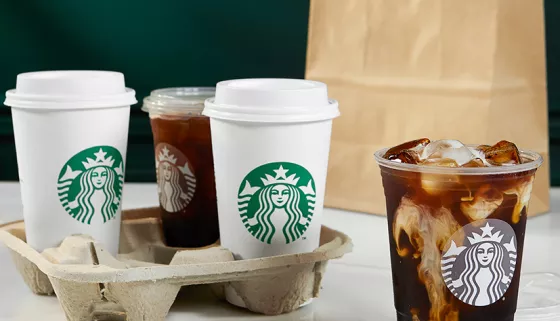

| гарячі напої | холодні напої
Международный рынок кофе в 2017 году оценивался в 30,4 млрд долларов США[27]. Крупнейшими экспортёрами кофе, в суммовом выражении, являются Бразилия (4,86 млрд долл.), Вьетнам (3,08 млрд долл.), Колумбия (2,7 млрд долл.), Германия (2,25 млрд долл.) и Швейцария (1,74 млрд долл.), а импортёрами — США (6,03 млрд долл.), Германия (3,5 млрд долл.), Франция (1,94 млрд долл.) и Италия (1,78 млрд долл.).
Большое значение на рынке кофе играют реэкспортёры, страны, закупающие сырьё у стран-производителей и перерабатывающие его (обжарка, перемалывание, переработка в растворимый кофе, расфасовка для розничной торговли) для последующего экспорта. Более двух третей реэкспорта приходится на Евросоюз, в первую очередь Германия (720 тысяч тонн), Бельгия (255 тысяч тонн), Италия (190 тысяч тонн), Нидерланды (107 тысяч тонн), Испания (98 тысяч тонн), Польша (97 тысяч тонн). Другие крупные реэкспортёры: США (176 тысяч тонн), Швейцария (112 тысяч тонн), Малайзия (94 тысячи тонн), КНР (85 тысяч тонн), Канада (75 тысяч тонн), Россия (57 тысяч тонн)[25][26].
Великобритания имеет умеренно океанический климат с большим числом дождей на протяжении всего года[40]. Температуры меняются в зависимости от сезона, однако редко падают ниже −12°C или поднимаются выше 35 °C[51]. Основные ветры идут с юго-запада и часто приносят холодную и мокрую погоду из Атлантического океана[40], однако восточные части страны, в основном, защищены от этих ветров и, поскольку основная часть осадков выпадает в западных регионах, восточные являются самыми сухими. Атлантические течения, разогретые Гольфстримом, приносят мягкие зимы; иногда зимой и ранней весной здесь бывают снегопады, хотя снег обычно лежит недолгo
В Бельгии концепцию кошачьего кафе изменили: в июле 2016 года в Генте открылось кошачье кафе, в котором живут кошки из приюта для бездомных животных. Хозяйки кафе говорят, что создали кафе на благо не только людей, но и животных: понравившуюся кошку можно забрать из кафе домой, заполнив необходимые для этого документы, по которым новый хозяин обязуется хорошо ухаживать за своим животным. У гентского кошачьего кафе говорящее название DreamCATchers: миссия кафе в том, чтобы сбывались мечты бездомных кошек о доме. За первый месяц работы гентского кошачьего кафе через него нашли новый дом 4 кошки[8][9]. В США первое котокафе было открыто в 2014 году в Нью-Йорке.

tarbucks Corporation, «Ста́рбакс» — американская компания по продаже кофе и одноимённая сеть кофеен. Основана в Сиэтле в 1971 году. На сентябрь 2020 года сеть Starbucks объединяла свыше 32 тысяч торговых точек в 75 странах мира. Википедия Основатели: Гордон Боукер, Джерри Болдуин, Зев Сигл Генеральный директор: Брайан Никкол (сент. 2024 г.–) Курс акций: SBUX (NASDAQ) 97,55 $ +1,43 (+1,49 %) 8 нояб., 16:00 GMT-5 - Отказ от обязательств Штаб-квартира: Сиэтл, Вашингтон, США Дата основания: 30 марта 1971 г., Пайк Плейс Маркет, Сиэтл, Вашингтон, США Финансовый директор: Rachel Ruggeri Технические директора: Деб Холл Лефевр
Исследования влияния потребления кофе на риск развития рака в целом показали либо отсутствие эффекта[84][85][86], либо снижение развития риска некоторых видов рака, особенно рака печени[87][88]. Литература, касающаяся рака простаты и употребления кофе, не позволяет сделать выводы о риске или пользе, связанных с употреблением кофе[84]. Тем не менее специалисты Tongji University Hospital, проанализировав 13 релевантных исследований, пришли к выводу, что две дополнительные чашки кофе в день снижают риск возникновения рака простаты на 2,5 %[89]. В 2020 году был опубликован большой метаанализ 28 предыдущих метаанализов связи между раком и потреблением кофе. Было рассмотрено 28 научных статей, в каждой из которых было рассмотрено несколько научных публикаций по теме. Авторы обнаружили, что у умеренно пьющих кофе риск развития рака печени или рака слизистой оболочки матки был ниже, чем у тех, кто не пьёт кофе. Метаанализ выявил и другие возможные положительные эффекты для самих любителей кофе. Например, у пьющих кофе на постоянной основе более низкий риск развития злокачественной меланомы, карциномы полости рта или рака горла, чем у тех, кто не пьёт кофе. Риск рака мочевого пузыря, вероятно, выше среди любителей кофе. Однако для этих типов рака данные всё ещё не определены. Также ещё окончательно не выяснено, «как количество и регулярность потребления, тип кофе и тип приготовления, то есть добавление молока или сахара» влияет на развитие рака. Для неродившегося ребёнка, однако, потребление кофе во время беременности может быть вредно: были обнаружены чёткие доказательства того, что дети женщин, которые пили много кофе во время беременности, имеют повышенный риск развития острого лимфобластного лейкоза[88].